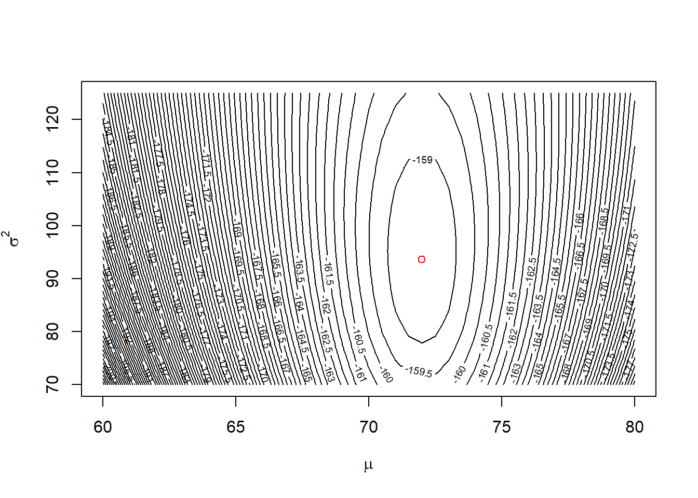
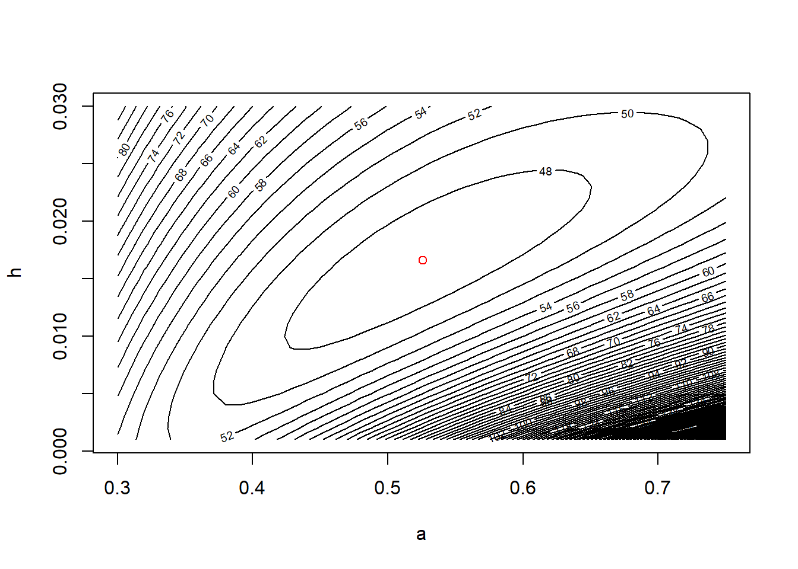

BMA / ST 590 computing companion
2023-09-04
Chapter 1 Maximum likelihood estimation
The likelihood function is the mathematical object that underlies many of the methods that we will study in this course. In this chapter, we will study the properties of the likelihood function for some simple models and data sets. We will see that the likelihood can be used to generate parameter estimates and associated measures of uncertainty (e.g., standard errors and confidence intervals). For most of the methods that we study later in this course, we will use software in which someone else has written code to analyze the likelihood function; thus we won’t have to worry about coding the likelihood function ourselves. However, it is helpful to know how to derive and analyze a likelihood function when needed, because likelihood analysis is flexible and can often be applied in specialized situations where code for a specific analysis may not already exist.
1.1 Mathematical basics
The mathematical expression for a likelihood function is identical to the mathematical expression that one would use to find the probability mass or density associated with a particular value of a random variable. For example, suppose that we have a very simple data set that consists of only one observation from a Poisson distribution. Let \(X\) denote the value of the single data point, and let \(\lambda\) denote the parameter of the Poisson distribution. In a probability class, we learn that we can find the probability mass associated with any particular value of \(X\) using the formula
\[
\mathrm{Pr}\!\left\{X=x; \lambda\right\} = \dfrac{e^{-\lambda} \lambda^x}{x!}.
\]
In R, we can access this probability mass function using the dpois function. For example, if we wanted to find the probability mass associated with \(X=1\) when \(\lambda = 1.5\), we could use
dpois(x = 1, lambda = 1.5)## [1] 0.3346952In likelihood analysis, we use the same mathematical expression for the probability mass function (pmf) of a data set, but we change our perspective. Instead of regarding the parameter as a known quantity and computing the probability associated with various possible values for the data, in likelihood analysis we regard the data as the known quantity and evaluate the same mathematical expression for different parameter values. In notation, this logic translates into an expression that we can write as \[ \ell\!\left(\lambda; x\right) = \mathrm{Pr}\!\left\{X=x; \lambda\right\}. \] where we have used \(\ell\!\left(\lambda; x\right)\) to denote the likelihood function for \(\lambda\) when we have a data set with value \(x\). The expression above seems strange, because nothing seems to be happening; we are simply taking the same mathematical expression and calling it two different things depending on the context. But that is all there is to it, at least with regard to constructing the likelihood function.
Because a likelihood function uses the same mathematical formulas as a probability mass function, we can use the same functions that R provides for computing probability masses for discretely valued data (or probability densities for continuously valued data) to compute the a likelihood function. Let’s return to our simple example of observing a single observation from a Poisson distribution. Suppose that observation is \(X=2\). We can use the dpois function to evaluate the likelihood for this single observation. For example, we can evaluate the likelihood at \(\lambda = 1.5\):
dpois(x = 2, lambda = 1.5)## [1] 0.2510214Or we could evaluate the likelihood at \(\lambda = 2\) or \(\lambda = 2.5\):
dpois(x = 2, lambda = c(2, 2.5))## [1] 0.2706706 0.2565156Now let’s evaluate the likelihood at a sequence of \(\lambda\) values:
my.lhood <- function(lambda) dpois(x = 2, lambda = lambda)
curve(my.lhood, from = 0, to = 5,
xlab = expression(lambda),
ylab = "Likelihood")
We might guess that the likelihood is maximized at \(\lambda = 2\). We’d be right, as the plot below suggests.
curve(my.lhood, from = 0, to = 5,
xlab = expression(lambda),
ylab = "Likelihood")
abline(v = 2, col = "red")
1.2 Horse-kick data
Most real data sets contain more than a single observation. Here is a data set that we can use to illustrate maximum likelihood estimation with a single parameter. Famously, Ladislaus van Bortkewitsch (1868 – 1931) published how many members of the Prussian army were killed by horse kicks in each of 20 years, for each of 14 army corps. In this analysis, we will ignore both the temporal structure and the grouping among corps and treat the data as just a simple random sample1 from a Poisson distribution with \(n=280\) data points. As a caveat, these data are often used to illustrate the Poisson distribution, as we will use them. They match the Poisson distribution more neatly than we might expect for most data sets.
First import the data. Note that the path name used here is specific to the file directory that was used to create this file. The path name that you use will likely differ.
horse <- read.table("data/horse.txt", header = TRUE)Ask for a summary of the data to make sure the data have been imported correctly.
summary(horse)## year corps deaths
## Min. :1875 Length:280 Min. :0.0
## 1st Qu.:1880 Class :character 1st Qu.:0.0
## Median :1884 Mode :character Median :0.0
## Mean :1884 Mean :0.7
## 3rd Qu.:1889 3rd Qu.:1.0
## Max. :1894 Max. :4.0We can also learn about the data by asking to see the first few records using the head command
head(horse)## year corps deaths
## 1 1875 GC 0
## 2 1876 GC 2
## 3 1877 GC 2
## 4 1878 GC 1
## 5 1879 GC 0
## 6 1880 GC 0or we can see the last few records using the tail command:
tail(horse)## year corps deaths
## 275 1889 C15 2
## 276 1890 C15 2
## 277 1891 C15 0
## 278 1892 C15 0
## 279 1893 C15 0
## 280 1894 C15 0Another useful function to keep in mind is the str function which tells you about the [str]ucture of an R object:
str(horse)## 'data.frame': 280 obs. of 3 variables:
## $ year : int 1875 1876 1877 1878 1879 1880 1881 1882 1883 1884 ...
## $ corps : chr "GC" "GC" "GC" "GC" ...
## $ deaths: int 0 2 2 1 0 0 1 1 0 3 ...Let’s plot a histogram of the values:
hist(horse$deaths,
breaks = seq(from = min(horse$deaths) - 0.5,
to = max(horse$deaths) + 0.5,
by = 1))
1.2.1 Calculate and plot the log-likelihood function
The first step in likelihood analysis is to construct the likelihood function. The likelihood function is given by the same mathematical expression as the expression for the joint probability mass function of the data. This joint pmf should follow from our probability model for the data.
In this case, we will assume that the data are an iid sample from a Poisson distribution with parameter \(\lambda\). Denoting the random sample as \(X_1, X_2, \ldots, X_n\), we might write this model as \[ X_i \stackrel{\text{iid}}{\sim} \mathrm{Pois}(\lambda). \] To make the notation a bit easier, we’ll write the entire data set as a vector \(\mathbf{X} = \left[ X_1 \; X_2 \; \cdots \; X_n\right]^T\), where we use uppercase \(\mathbf{X}\) to denote the unobserved random vector and lowercase \(\mathbf{x}\) to denote a single realization of \(\mathbf{X}\). The likelihood function is then given by \[\begin{align*} \ell(\lambda; \mathbf{x}) & = \mathrm{Pr}\!\left\{\mathbf{X} = \mathbf{x}; \lambda\right\} \\ & = \mathrm{Pr}\!\left\{X_1 = x_1, X_2 = x_2, \ldots X_n = x_n; \lambda\right\} \\ & = \mathrm{Pr}\!\left\{X_1 = x_1; \lambda\right\} \times \mathrm{Pr}\!\left\{X_2 = x_2; \lambda\right\} \times \cdots \times \mathrm{Pr}\!\left\{X_n = x_n; \lambda\right\} \\ & = \prod_{i=1}^n \mathrm{Pr}\!\left\{X_i = x_i; \lambda\right\}. \end{align*}\] The third equality above follows from the independence of the data points.
To prevent numerical underflow, we’ll work on the log-likelihood instead of the likelihood itself. Throughout these notes, we’ll use lowercase \(\ell = \ln \ell\) to denote the log likelihood. Note that when we use the log likelihood, the product of the marginal pmfs above becomes a sum: \[\begin{align*} \ell(\lambda; \mathbf{x}) & = \ln \prod_{i=1}^n \mathrm{Pr}\!\left\{X_i = x_i; \lambda\right\} \\ & = \sum_{i=1}^n \ln \mathrm{Pr}\!\left\{X_i = x_i; \lambda\right\} \end{align*}\]
Let’s create a function that calculates the log-likelihood for a value of \(\lambda\):
horse.ll <- function(my.lambda){
ll.vals <- dpois(x = horse$deaths, lambda = my.lambda, log = TRUE)
sum(ll.vals)
}We can use this function to calculate the log-likelihood for any value of \(\lambda\), such as \(\lambda = 1\):
horse.ll(1)## [1] -328.2462Let’s calculate the log-likelihood for many values of \(\lambda\), in preparation for making a plot. We’ll use a loop here, and not worry about vectorization.
# create a vector of lambda values using the 'seq'uence command
lambda.vals <- seq(from = 0.01, to = 2.0, by = 0.01)
# create an empty vector to store the values of the log-likelihood
ll.vals <- double(length = length(lambda.vals))
# use a loop to find the log-likelihood for each value in lambda.vals
for (i.lambda in 1:length(lambda.vals)) {
ll.vals[i.lambda] <- horse.ll(lambda.vals[i.lambda])
}Now plot the log-likelihood values vs. the values of \(\lambda\):
plot(ll.vals ~ lambda.vals, xlab = "lambda", ylab = "log likelihood", type = "l")
abline(v = 0.7, col = "red")
1.2.2 Find the MLE numerically using ‘optimize’
Bolker’s book illustrates numerical optimization using the optim function. The R documentation recommends using optimize for one-dimensional optimization, and optim for optimizing a function in several dimensions. So, we will use optimize here. We will enclose the entire call to optimize in parentheses so that the output is dumped to the command line in addition to being stored as horse.mle.
(horse.mle <- optimize(f = horse.ll, interval = c(0.1, 2), maximum = TRUE))## $maximum
## [1] 0.7000088
##
## $objective
## [1] -314.1545The optimize function returns a ‘list’. A list is an R object that contains components of different types. The numerically calculated MLE is \(\hat{\lambda} \approx 0.7\). The ‘objective’ component of gives the value of the log-likelihood at that point.
1.3 Pulse rate data
The data set pulse.csv contains the heights (in cm) and resting pulse rates (in beats per minute) of 43 graduate students at NCSU. We will use the pulse-rate data as an example to illustrate estimating the mean and variance of a Gaussian distribution from a simple random sample. The purpose of this example is two-fold: first, to illustrate maximum-likelihood estimation with more than one parameter, and second, to illustrate an important result about the MLE of the variance for normally distributed data.
pulse <- read.csv("data/pulse.csv", head = T)Inspect the data to make sure they have been imported correctly.
summary(pulse)## height rate
## Min. :152.0 Min. : 52
## 1st Qu.:163.0 1st Qu.: 66
## Median :168.0 Median : 72
## Mean :168.2 Mean : 72
## 3rd Qu.:173.0 3rd Qu.: 78
## Max. :185.0 Max. :100head(pulse)## height rate
## 1 152 68
## 2 173 68
## 3 165 82
## 4 160 60
## 5 168 74
## 6 170 80For the sake of illustration, we will estimate the mean and variance of the normal distribution using the optim function in R.
First, we write a function to calculate the log likelihood.
pulse.ll <- function(m, v){
ll.vals <- dnorm(pulse$rate, mean = m, sd = sqrt(v), log = TRUE)
sum(ll.vals)
}Note that R’s function for the pdf of a normal distribution — dnorm — is parameterized by the mean and standard deviation (SD) of the normal distribution. Although it would be just as easy to find the MLE of the standard deviation \(\sigma\), for the sake of illustration, we will seek the MLE of the variance, \(\sigma^2\). (It turns out that, if we write the MLE of the standard deviation as \(\hat{\sigma}\) and the MLE of the variance as \(\hat{\sigma}^2\), then \(\hat{\sigma} = \sqrt{\hat{\sigma}^2}\). This is an example of the {} of MLEs.)
We can use our function to calculate the likelihood for any choice of mean and variance. For example, let’s try \(\mu = 60\) and \(\sigma^2 = 100\).
pulse.ll(m = 60, v = 100)## [1] -189.6155We want to maximize the likelihood using optim. Unfortuantely, optim is a little finicky. To use optim, we have to re-write our function pulse.ll so that the parameters to be estimated are passed to the function as a single vector. Also, by default, optim performs minimization instead of maximization. We can change this behavior when we call optim. Alternatively, we can just re-define the function to return the negative log likelihood.
pulse.neg.ll <- function(pars){
m <- pars[1]
v <- pars[2]
ll.vals <- dnorm(pulse$rate, mean = m, sd = sqrt(v), log = TRUE)
-sum(ll.vals)
}Now we can use optim:
(pulse.mle <- optim(par = c(60, 100), # starting values, just a ballpark guess
fn = pulse.neg.ll))## $par
## [1] 71.99897 93.65332
##
## $value
## [1] 158.6099
##
## $counts
## function gradient
## 51 NA
##
## $convergence
## [1] 0
##
## $message
## NULLNote that the MLE of the variance is \[ \hat{\sigma}^2 = \frac{\sum_i (x_i - \bar{x})}{n}. \] Let’s verify this by calculating the same quantity at the command line:
residuals <- with(pulse, rate - mean(rate))
ss <- sum(residuals^2)
n <- nrow(pulse)
ss / n## [1] 93.62791Compare this to the answer given by var, and to the more usual calculation of the variance as
\[
s^2 = \frac{\sum_i (x_i - \bar{x})}{n-1}.
\]
(var.usual <- ss / (n - 1))## [1] 95.85714var(pulse$rate)## [1] 95.85714One main take-home of this example is that when we use maximum likelihood to estimate variances for normally distributed data, the MLE is biased low. In other words, it underestimates the true variance. When we study hierarchical models later in the semester, we will regularly find ourselves estimating variances for normally distributed effects, and will have to deal with the consequences of the fact that the MLEs of these variances are biased low.
For models with 2 parameters, we can visualize the likelihood surface with a contour plot. To do so, the first step is to define a lattice of values at which we want to calculate the log-likelihood. We’ll do so by defining vectors for \(\mu\) and \(\sigma^2\):
m.vals <- seq(from = 60, to = 80, by = 0.5)
v.vals <- seq(from = 70, to = 125, by = 0.5)Now we will define the matrix that will store the values of the log-likelihood for each combination of \(\mu\) and \(\sigma^2\) in the lattice shown above.
ll.vals <- matrix(nrow = length(m.vals), ncol = length(v.vals))Next, we will write a nested loop that cycles through the lattice points, calculates the log-likelihood for each, and stores the value of the log likelihood in the matrix ll.vals that we just created.
for (i.m in 1:length(m.vals)) {
for(i.v in 1:length(v.vals)) {
ll.vals[i.m, i.v] <- pulse.ll(m = m.vals[i.m], v = v.vals[i.v])
}
}Now we will use the contour function to build the contour plot, and then add a red dot for the MLE.
contour(x = m.vals, y = v.vals, z = ll.vals, nlevels = 100,
xlab = expression(mu), ylab = expression(sigma^2))
# show the MLE
points(x = pulse.mle$par[1], y = pulse.mle$par[2], col = "red")
1.4 Tadpole data
Finally, we’ll take a look at the data from the functional response experiment of Vonesh and Bolker (2005), described in section 6.3.1.1 of Bolker’s book. This is another example of using likelihood to estimate parameters in a two-parameter model. This example differs from the previous two examples because we won’t assume that the data constitute a simple random sample from some known distribution like the Gaussian or Poisson distribution. Instead, we’ll build a somewhat more customized model for these data that incorporates some ecological ideas. This process of building a customized model is more typical of how one would analyze a “real” data set. We’ll start by using the rm command to clean up the workspace.
rm(list = ls())First, we’ll read in the data and explore them in various ways.
library(emdbook)
data("ReedfrogFuncresp")
# rename something shorter
frog <- ReedfrogFuncresp
rm(ReedfrogFuncresp)
summary(frog)## Initial Killed
## Min. : 5.00 Min. : 1.00
## 1st Qu.: 13.75 1st Qu.: 5.75
## Median : 25.00 Median :10.00
## Mean : 38.12 Mean :13.25
## 3rd Qu.: 56.25 3rd Qu.:18.75
## Max. :100.00 Max. :35.00head(frog)## Initial Killed
## 1 5 1
## 2 5 2
## 3 10 5
## 4 10 6
## 5 15 10
## 6 15 9plot(Killed ~ Initial, data = frog)
Following Bolker, we’ll assume that the number of individuals killed takes a binomial distribution, where the number of trials equals the initial tadpole density, and the probability that a tadpole is killed is given by the expression \[ p_i = \dfrac{a}{1 + a h N_i}. \] The two parameters to estimate are \(a\), which we interpret as the attack rate when the prey density is low, and \(h\), which is the handling time. This model is motivated by the so-called “Type II” functional response of predator-prey ecology, in which the prey consumption rate saturates as prey density grows. In this case, using the Type II functional curve for these data is a pedagogical simplification; as Vonesh and Bolker (2005) observe, Holling’s functional responses give the predation rate when the prey density is constant. However, this experiment ran for two weeks and prey densities declined over the course of the experiment. A more appropriate analysis, and one that Vonesh and Bolker (2005) pursue in their paper, takes account of the declining prey densities. For the purposes of this example, though, we’ll ignore this aspect of the analysis (as Bolker (2008) does) and fit the data assuming that the probability of predation is given by the Type II functional response.
If we write the number of individuals killed in each trial as \(Y_i\), The full model can then be written as \[\begin{align*} Y_i & \sim \mathrm{Binom}\left(p_i, N_i \right) \\ p_i & = \dfrac{a}{1 + a h N_i}. \end{align*}\]
We’ll first construct the negative log-likelihood function.
# negative log-likelihood, for use with optim
frog.neg.ll <- function(params){
a <- params[1]
h <- params[2]
prob.vals <- a / (1 + a * h * frog$Initial)
ll.vals <- dbinom(frog$Killed, size = frog$Initial, prob = prob.vals, log = TRUE)
-1 * sum(ll.vals)
}Now we’ll find the MLE using optim
(frog.mle <- optim(par = c(0.5, 1/40),
fn = frog.neg.ll))## Warning in dbinom(frog$Killed, size = frog$Initial, prob = prob.vals, log =
## TRUE): NaNs produced## $par
## [1] 0.52592567 0.01660454
##
## $value
## [1] 46.72136
##
## $counts
## function gradient
## 59 NA
##
## $convergence
## [1] 0
##
## $message
## NULLWhy did this code produce warnings? Should we care? See section 1.5 below.
Let’s extract the MLEs and add a fitted to our data plot.
We’ll plot the data and overlay a fitted line.
a.mle <- frog.mle$par[1]
h.mle <- frog.mle$par[2]
# add a line to our plot to show the fitted curve
plot(Killed ~ Initial, data = frog)
init.values <- with(frog, seq(from = min(Initial), to = max(Initial), length = 100))
pred.values <- a.mle * init.values / (1 + a.mle * h.mle * init.values)
lines(x = init.values, y = pred.values, col = "red")Finally, we’ll plot the likelihood contours.
# plot negative likelihood contours
a.vals <- seq(from = 0.3, to = 0.75, by = 0.01)
h.vals <- seq(from = 0.001, to = 0.03, by = 0.001)
ll.vals <- matrix(nrow = length(a.vals), ncol = length(h.vals))
for (i.a in 1:length(a.vals)) {
for(i.h in 1:length(h.vals)) {
ll.vals[i.a, i.h] <- frog.neg.ll(c(a.vals[i.a], h.vals[i.h]))
}
}
contour(x = a.vals, y = h.vals, z = ll.vals, nlevels = 100,
xlab = "a", ylab = "h")
points(x = a.mle, y = h.mle, col = "red")
Note that, in contrast to the pulse-rate data, here the likelihood contours form regions whose major axes are not parallel to the parameter axes. We’ll reflect on the implications of this shape in the next section.
1.5 Transformable constraints
So far, we have not thought much about the numerical optimization routines that R uses to find MLEs. If time allowed, we really should think more deeply about how these routines work. Indeed, Bolker devotes an entire chapter (his chapter 7) to numerical optimization. Because time is short, we won’t go that deeply into understanding these methods now, although Bolker’s chapter is worth a read if you are so inclined.
There is one topic that deserves more of our attention, which is the issue of constriants on the allowable parameter space. (Bolker touches on this in his \(\S\) 7.4.5.) Many times, we write down models with parameters that only make biological sense in a certain range. For example, in the horse-kick data, we know that \(\lambda\) must be positive. However, most numerical optimization routines are not terribly well suited to optimizing over a constrained space. (The presence of constraints is one of the reasons why it is important to initiate numerical optimization routines with reasonable starting values.) One exception is the L-BFGS-B method, available in optim, which will permit so-called rectangular constraints. An alternative approach that will work with any numerical optimization scheme is to transform the constraints away. That is, transform the parameterization to a new scale that is unconstrained. Because of the invariance principle of MLEs, these transformations won’t change the MLEs that we eventually find, as long as the MLEs are not on the edge of the original, constrained space.
To illustrate, consider the parameters in the tadpole predation data again. Clearly, both the parameters \(a\) and \(h\) must be positive. However, there is another constraint on \(a\). The probability that a tadpole is eaten must be \(\leq 1\), and thus we must have \(a \leq 1 +ahN\) for all \(N\). A little algebra shows that this is equivalent to \[ a \leq \dfrac{1}{1-hN}. \] The right-hand side above is increasing in \(N\), and thus if the above expression is to be true for all \(N>0\), then we must have \(a \leq 1\).2
Thus we will illustrate two handy transformations here. For parameters that are constrained to lie on the unit interval, such as \(a\) in this case, we can re-define the model in terms of the logit (or log-odds) of \(a\). In fact, the logit transformation will work for any parameter that is constrained to lie on an interval; we just have to rescale the transformation accordingly. For a parameter that is constrained to be positive, such as \(h\), we can use the log transformation. That is, define \[\begin{align*} a^* & = \ln \left(\dfrac{a}{1-a}\right) \\ k^* & = \ln (k). \\ \end{align*}\] Fitting proceeds in the usual way; we just have to invert the transformation before evaluating the likelihood:
logit <- function(p) log(p / (1 - p))
invLogit <- function(x) exp(x) / (1 + exp(x))
# negative log-likelihood, for use with optim
frog.neg.ll <- function(params){
a <- invLogit(params[1])
h <- exp(params[2])
prob.vals <- a / (1 + a * h * frog$Initial)
ll.vals <- with(frog, dbinom(Killed,
size = Initial,
prob = prob.vals,
log = TRUE))
-1 * sum(ll.vals)
}
(frog.mle <- optim(par = c(logit(0.5), log(1/60)),
fn = frog.neg.ll))## $par
## [1] 0.1038349 -4.0981694
##
## $value
## [1] 46.72136
##
## $counts
## function gradient
## 43 NA
##
## $convergence
## [1] 0
##
## $message
## NULLBack-transforming to the original scale recovers the previous MLEs:
(a.mle <- invLogit(frog.mle$par[1]))## [1] 0.5259354(h.mle <- exp(frog.mle$par[2]))## [1] 0.01660304Bibliography
Recall that when we refer to a data set as a “simple random sample”, we mean that the data are independent and identically distributed. That is, they are independent draws from the same underlying probability distribution.↩︎
The upper bound on \(a\) is odd and possibly confusing. In standard predation models, there is no upper bound on \(a\). The reason why we have an upper bound on \(a\) in this case is because we’ve taken the usual functional expression for Type II predation — which gives a predation rate — and re-interpreted it as the number of tadpoles eaten over a finite time interval. This was probably never a great idea to begin with, and now we are seeing the cost. The \(a \leq 1\) constraint arises in this case because the number of tadpoles eaten in this experiment can’t exceed the number that were originally placed in the experimental mesocosm. This emphasizes that if we’re really only using the Type II functional response here for pedagogical convenience. If we really wanted to learn something about the underlying predation rate, then we have to account for the prey depletion over the course of the experiment, as Vonesh and Bolker (2005) do in their study.↩︎